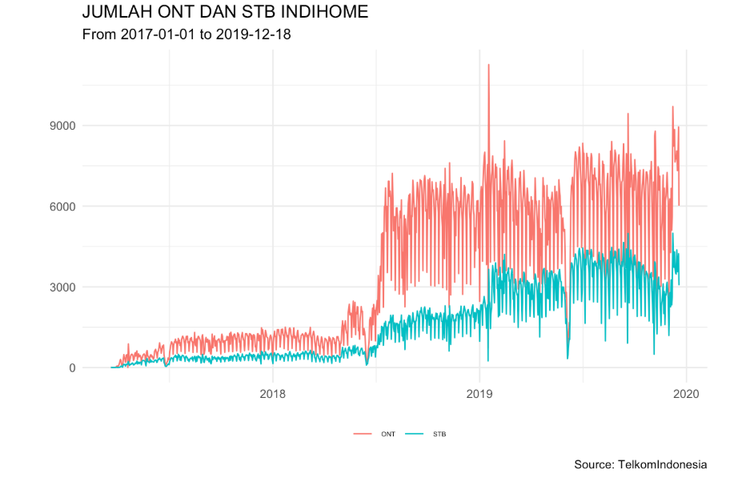
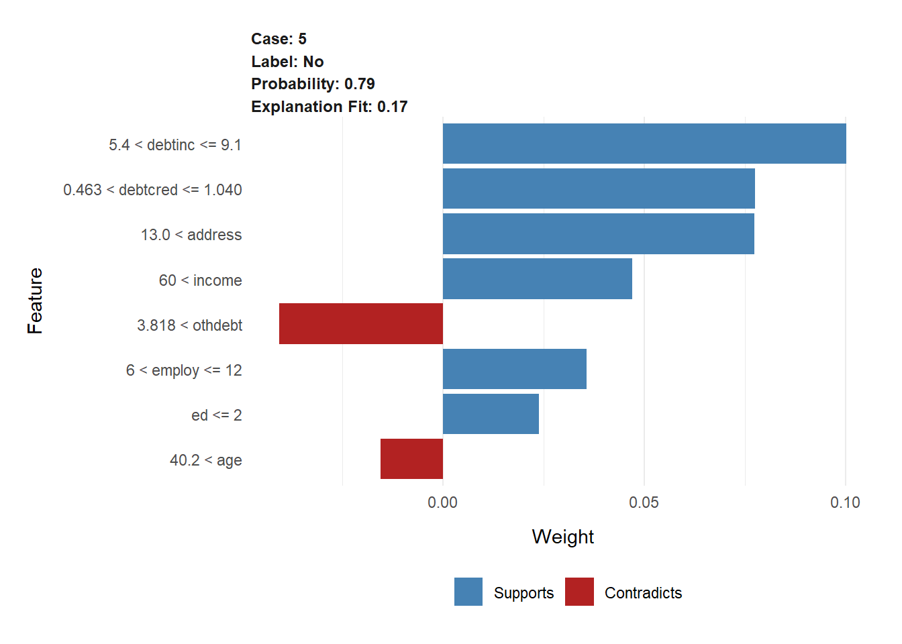

Bab 1 Telecommunication
1.1 Supply Chain Analytics
1.1.1 Background
Umumnya tiap perusahaan layanan telekomunikasi memiliki aplikasi yang digunakan untuk menyimpan data transaksi dari layanan-layanan yang diberikan. Dalam hal ini ada hubungan yang sangat kuat antara proses pemasangan baru di pelanggan dengan proses procurement atau pengadaan barang serta ketersediaan barang yang dibutuhkan.

1.1.2 Expected Outcome
Yang diharapkan dari Supply Chain Management Learning Machine Model adalah selain dapat memprediksi untuk kebutuhan set top box atau ONT (modem) dapat juga untuk melihat gambaran setahun dari pelaksanaan pemasangan baru ONT/STB di service layanan. Dari data yang dianalisa kita dapat melihat mengenai sifat layanan yang disediakan oleh setiap transaksi dari data bulanan tersebut, apakah layanan tersebut sudah ‘mature’ karena layanan yang diberikan bukan layanan konsumsi tapi merupakan layanan instalasi sehingga terjadi kemungkinan terjadi kejenuhan di pelanggan terhadap layanan tersebut. Selain itu dari data timeseries tersebut masih dapat dilihat pertumbuhan dan pola penjualannya sehingga memungkinkan management untuk mengatur target terhadap teknisi dan target penjualan layanan tersebut dan memikirkan layanan baru yang dapat dijadikan tahap introduction/growth dan berlanjut ke proses perkembangan pemasaran product sebelum layanan atau produk tersebut benar-benar ditinggalkan.
1.1.3 Recommendation
Setelah mengamati hasil analisa dan pengukuran serta gambaran prediksi dari hasil proses machine learning maka rekomendasi yang dapat diberikan adalah bahwa selain target dalam penjualan per bulan, barang yang harusnya dibeli jika tidak diproduksi lagi harus diback-up dengan barang/item tipe yang lain. Selain itu dari kurva yang ada dapat dilihat bahwa masa periode siklus hidup layanan tersebut masih bagus namun sebaiknya mulai disiapkan untuk layanan yang baru seperti content yang bisa dijual lewat layanan data, baik konten untuk IPTV atau TV berbayar maupun konten untuk layanan data/internetnya untuk mengantisipasi turunnya kurva life cycle product.
1.2 Incident Analysis
1.2.1 Background
Indikator kepuasan pelanggan dapat ditunjukkan dengan nilai NPS (Net Promoter Score). Net Promoter Score dapat menunjukkan secara langsung tipe konsumen yang loyal dan dapat memberikan prediksi tingkah laku konsumen terhadap bisnis Telkom. Score ini menjadi indikator berapa banyak konsumen Anda yang mau merekomendasikan layanan kita ke orang lain. Selain itu, NPS Menunjukan interaksi personal berdasarkan pemahaman mendalam yang membuat konsumen menyukai produk dan layanan Telkom. Semakin tinggi nilai NPS menunjukkan tingginya indeks kepuasan konsumen.
Hal paling mendasar untuk meningkatkan nilai NPS adalah memberikan customer experience yang terbaik kepada pelanggan salah satunya adalah memberikan service assurance yang excellence. Adanya Operational Support System yang saat ini sudah berjalan di operasional secara Nasional, masih perlu untuk terus dikembangkan dan disempurnakan kapabilitasnya agar mampu memberikan service assurance yang excellent untuk dapat meningkatkan customer experience, menurunkan angka gangguan (Q) sehingga dapat tercapai goal yaitu peningkatan nilai NPS.
1.2.2 Expected Outcome
Melakukan permodelan machine learning untuk identifikasi dini pelanggan yang berpotensi akan mengalami gangguan internet, supaya dapat ditangani terlebih dahulu sehingga mengurangi angka komplain pelanggan dan dapat kepuasan pelanggan.
1.2.3 Recommendation
1.3 B2B Recommender System
1.3.1 Background
Bisnis B2B di Indonesia saat ini cukup menantang. Untuk bertahan di industri ini, Indosat harus menggunakan semua sumber daya untuk mendapatkan atau mempertahankan pelanggan. Tetapi terkadang terhambat pada keterbatasan informasi untuk mempertahankan pelanggan. Peluang penjualan di Indosat B2B sebagian besar berasal dari tim Sales itu sendiri. Tim B2B membutuhkan lebih banyak sumber informasi untuk mengembangkan bisnis.
Kami juga memiliki masalah pada crosss selling atau upselling kepada existing customer. Meskipun kami memiliki perilaku pembelian pelanggan, kami tidak tahu apakah pelanggan akan membeli kembali atau tidak (repurchase). Jika pelanggan membeli kembali, kami tidak tahu produk apa yang harus dibeli? Tim b2b tidak memiliki informasi rekomendasi produk berdasarkan data yang dimiliki
1.3.2 Expected Outcome
output proyek ini memberikan prediksi tentang kemungkinan customer repurchase, sehingga dapat meningkatkan efektivitas penjualan pada penjualan produk ke pelanggan yang tepat.
Proyek ini juga akan memberikan rekomendasi kepada tim sales tentang produk apa yang perlu dijual pada pelanggan tertentu. Jadi tim sales akan memiliki lebih banyak informasi peluang produk yang sesuai.
1.3.3 Recommendation
Output dari proyek ini adalah dashboard rekomendasi yang dapat memberikan rekomendasi kepada penjualan tentang kemungkinan repurchase pelanggan. Dashboard rekomendasi ini juga memberikan rekomendasi tentang produk untuk dijual kepada pelanggan.
Prediksi repurchase yang akurat dan produk rekomendasi yang akurat dapat meningkatkan pendapatan secara langsung dengan meningkatkan cross Sell Revenue pada pelanggan yang sudah ada.
Proyek ini juga dapat meningkatkan produktivitas penjualan. Penjualan dapat fokus pada pelanggan yang memiliki lebih banyak kemungkinan untuk membeli.
Bab 2 Finance
2.1 Credit Risk Analysis
2.1.1 Background
Credit scoring membutuhkan berbagai data profil calon peminjam sehingga tingkat resiko dapat dihitung dengan tepat. Semakin benar dan lengkap data yang disediakan, maka semakin akurat perhitungan yang dilakukan. Proses tersebut tentunya merupakan hal yang baik, namun di sisi calon peminjam proses yang harus dilalui dirasa sangat merepotkan dan membutuhkan waktu untuk menunggu. Dan seiring tingkat kompetisi yang samkin tinggi di industri finansial, customer memiliki banyak alternatif. Semakin cepat proses yang ditawarkan, semakin tinggi kesempatan untuk mendapatkan peminjam.
Tantangan pun muncul, bagaimana mendapatkan pelanggan dengan proses yang efisien namun akurasi dari credit scoring tetap tinggi. Disinilah machine learning dapat membantu menganalisa datadata profil peminjam dan proses pembayaran sehingga dapat mengeluarkan rekomendasi profil pelanggan yang beresiko rendah.
2.1.2 Expected Outcome
Harapannya setelah mempunyai model machine learning dengan perfomance model yang baik, pegawai bank dapat dengan mudah mengidentifikasi karakteristik customer yang memiliki peluang besar untuk melunasi pinjaman dengan lancar. Dengan adanya model machine learning ini tentunya akan mengurangi biaya dan waktu yang lebih cepat.
2.1.3 Recommendation
#> Model Evaluation Estimate
#> 1 Random Forest Accurary 0.843
#> 2 Random Forest Specificity 0.898
#> 3 Random Forest Precision 0.822
#> 4 Random Forest Recall 0.755Model machine learning untuk memprediksi kredit pinjaman customer yang lancar dan tidak lancar memiliki perfomance model yang cukup baik. Nantinya, pegawai bank dapat menggunakan model tersebut dengan mengisikan data pribadi setiap customer, kemudian hasil yang diperoleh dapat di visualisasikan sebagai berikut:

Hasil visualisasi tersebut adalah contoh prediksi salah satu customer, customer tersebut terprediksi no yang memiliki arti customer tersebut berpeluang besar sebagai customer yang gagal bayar. Tentunya ketika hasil prediksi menyatakan customer tersebut berpeluang besar untuk gagal bayar, artinya bank tidak akan memberikan pinjaman kepada customer tersebut. Dari hasil visual tersebut juga ditunjukkan variabel mana yang support dan contradicts terhadap hasil prediksi yang dihasilkan.
Bab 3 Retail
3.1 Customer Segmentation
3.1.1 Background
FMCG (Fast Moving Consumer Goods) adalah produk-produk yang sifatnya cepat habis yang biasanya terdiri dari kebutuhan sehari-hari, sehingga dapat terjual dalam waktu singkat dan biaya yang relatif rendah. Suatu perusahaan FMCG mendistribusikan penjualannya ke berbagai macam sektor seperti hotel, restoran, kafe, dan semua macam outlet retail. Bagian CRM (Customer Relationship Management) mengumpulkan transaksi penjualan satu tahun terakhir untuk setiap kategori produk. Perusahaan ingin membuat model machine learning yang secara otomatis dapat mengkategorikan customer mereka menjadi dua kelas yaitu, horeca (Hotel, Restaurant, and Cafe) dan retail industry.
3.1.2 Expected Outcome
Harapannya setelah mempunyai model machine learning, pihak CRM dapat melakukan prediksi mengenai customer yang membeli product mereka berasal dari industry mana yang dilihat dari transaksi setiap customer untuk setiap kategori.
3.1.3 Recommendation
data.frame(
"Model" = rep("KNN", 4),
"Evaluation" = c("Accuracy", "Specificity", "Precision", "Recall") ,
"Estimate" = c(0.920, 0.898, 0.823, 0.965)
)#> Model Evaluation Estimate
#> 1 KNN Accuracy 0.920
#> 2 KNN Specificity 0.898
#> 3 KNN Precision 0.823
#> 4 KNN Recall 0.965Perfomance model yang diperoleh sudah cukup baik untuk mengkategorikan customer berasal dari kelas horeca atau retail. Langkah selanjutnya, setelah mengetahui industry dari customer tersebut pihak perusahaan dapat mengamati perilaku customer tersebut cenderung lebih banyak membeli produk pada kategori apa dan dapat dijadikan pertimbangan untuk memberikan promosi yang sesuai kebutuhan customer.